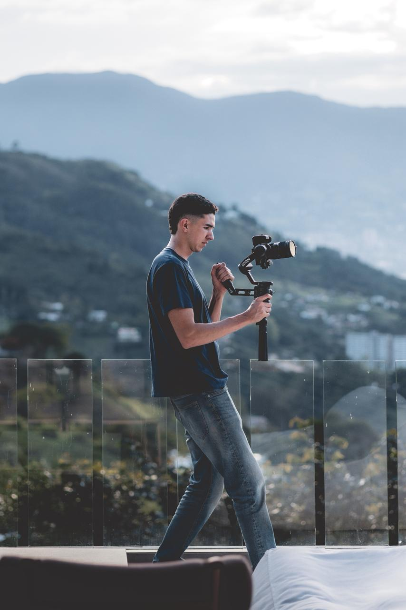

Tengo tres años de experiencia creando contenido audiovisual. Empecé por gusto, por las ganas de crear. En el camino entendí algo que cambió todo: ese mismo lenguaje visual podía hacer crecer negocios — darles una presencia digital que se vea profesional, comunique claro y los ayude a vender.